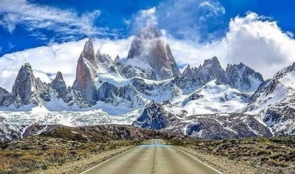

Viaje por carretera
En auto
Viajar en auto te permite disfrutar de los paisajes y organizar tus propias paradas. Antes de salir, revisá las condiciones de las rutas, el combustible y el pronóstico del tiempo.
VER UBICACIÓN →